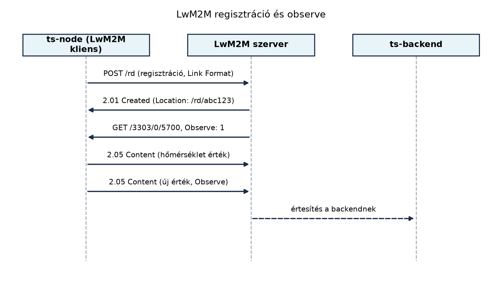

Az LwM2M (Lightweight Machine-to-Machine) akkor válik szükségessé, amikor a TerraSense üvegházban már nem elég egyedi, saját fejlesztésű topicokon és REST-hívásokon keresztül menedzselni a csomópontokat. Ha a flottát üzemeltető rendszernek egységesen kell látnia az eszközök állapotát, konfigurációját, firmware-verzióját, és szabványos módon kell parancsokat kiadnia (öntözőszelep nyitás, újraindítás, frissítés indítása), akkor a CoAP-ra épülő, szabványos objektummodellel dolgozó LwM2M jelentős előnyt kínál: a backend és az eszköz között nem kell minden egyes művelethez egyedi protokollt és adatsémát tervezni. Ebben az alfejezetben az LwM2M-et mint a TerraSense menedzsmentrétegét vezetjük be, és az eszköz adatait szabványos objektumokhoz rendeljük.
A TerraSense rendszerben a telemetria már MQTT-n keresztül érkezik a backendbe, de az üzemeltetés során felmerülő kérdések – hány eszköz aktív, melyik milyen firmware-verziót futtat, hogyan lehet egy adott csomópontot újraindítani vagy firmware-frissítést indítani – túlmutatnak az MQTT-topicok egyszerű publish/subscribe modelljén. Egyedi megoldást írhatnánk: minden eszközhöz saját topicokat, JSON-sémákat és parancsformátumot definiálhatnánk, de ez gyorsan átláthatatlanná válik, és a különböző gyártók, eszközosztályok integrációja is nehézkes. Az LwM2M ezt a rést tölti be: egy szabványos, CoAP-alapú menedzsmentprotokollt ad, amelyben az eszköz erőforrásai objektum–példány–erőforrás hierarchiában címezhetők, és a műveletek (olvasás, írás, végrehajtás, megfigyelés) a CoAP módszereire épülnek. Így a TerraSense-ben a ts-node Zephyr-firmware-je LwM2M-klienst futtathat, a backend pedig egy LwM2M-szerverrel (például nyílt forrású megoldással) menedzselheti a flottát.
Definíció. Az OMA Lightweight M2M (LwM2M) egy
szabványos eszközmenedzsment- és telemetriaprotokoll, amely a CoAP-ra
épül, és az eszközök erőforrásait objektum–példány–erőforrás
(Object–Instance–Resource) hierarchiában modellezi. Minden erőforrás
URI-ja a /objektum/példány/erőforrás sémát követi, például
/3303/0/5700 a hőmérséklet-érzékelő aktuális értékét
jelenti.
Definíció. Az LwM2M három fő szereplője: - LwM2M-ügyfél (client): az eszközön futó komponens, amely az erőforrásokat tárolja, és a CoAP-kéréseket fogadja. A TerraSense-ben ez a ts-node Zephyr-alkalmazása. - LwM2M-szerver (server): a központi menedzsmentkomponens, amely regisztrálja az ügyfelet, és műveleteket kezdeményez (olvasás, írás, megfigyelés, végrehajtás). A TerraSense-ben ez a backend része lehet, vagy külön szolgáltatás. - Bootstrap-szerver (bootstrap server): opcionális szereplő, amely az ügyfél kezdeti konfigurációját adja meg (például a menedzsmentszerver címét, biztonsági kulcsokat). A tiszta, nulláról indított eszközök ezen keresztül kapják meg a csatlakozáshoz szükséges paramétereket.
Az LwM2M-ben az eszköz állapotát nem önkényes JSON-mezőkkel, hanem
szabványos objektumokkal írjuk le. A leggyakoribb objektumok: -
/3 – Device: gyártó, modell, sorozatszám, firmware-verzió,
újraindítás. - /5 – Firmware Update: frissítési kép,
állapot, indítás. - A szenzorokhoz és aktuátorokhoz az IPSO Smart
Objects katalógusa biztosít szabványos azonosítókat, például
/3303 hőmérséklet, /3304 páratartalom,
/3305 aktuátor.
A hőmérséklet-érzékelő 5700 erőforrása az aktuális mért
értéket adja, míg a Device objektum 0 erőforrása a gyártó
nevét, 3 erőforrása a firmware-verziót.

A regisztráció: az ügyfél a szerver /rd erőforrására
küldött CoAP POST-tal regisztrál. A payload a támogatott
objektumpéldányok listája CoRE Link Format formátumban, például:
</3/0>,</3303/0>,</3304/0>,</3305/0>,</5/0>A szerver válasza 2.01 Created, és a Location fejlécben
visszaadja a regisztráció azonosítóját (/rd/abc123). Ez az
azonosító szükséges a későbbi frissítéshez és a lejárat kezeléséhez.
A regisztráció élettartamát az ügyfél a lt (lifetime)
lekérdezési paraméterrel jelezheti, és a lejárat előtt frissítenie kell
egy POST /rd/abc123 üzenettel. Ha ez elmarad, a szerver
törli az eszközt, és az nem menedzselhető tovább.
A megfigyelés (observe) a CoAP Observe opcióját
használja: a szerver GET kérést küld az erőforrásra, az
Observe opcióval. Az ügyfél válasza után minden értékváltozásnál újabb
2.05 Content üzenetet küld, egészen addig, amíg a szerver
le nem iratkozik. Ezzel a backend valós időben értesül a hőmérséklet
változásáról, anélkül, hogy folyamatosan lekérdezné.
A write (írás) egy művelet, amellyel a szerver egy
erőforrás értékét módosítja, például az aktuátor be- vagy
kikapcsolására. CoAP PUT vagy POST üzenettel
történik, a payload az új érték. A execute
(végrehajtás) egy erőforráshoz rendelt művelet indítására szolgál
(például /3/0/4 reboot), CoAP POST üzenettel,
payload nélkül.
A Firmware Update objektum (/5)
előzetese: az eszköz firmware-frissítését szabványos módon menedzseli. A
/5/0/0 erőforrás a firmware-csomag, /5/0/1 az
URI, ahonnan a kép letölthető, /5/0/2 az update művelet,
/5/0/3 pedig az állapot. Egy frissítés folyamata: a szerver
beírja a kép URI-ját (/5/0/1), majd execute-et küld a
2 erőforrásra (Update). Az eszköz letölti, ellenőrzi és
telepíti a firmware-t, majd frissíti az állapotot (/5/0/3).
Ezt a TerraSense-ben az OTA-frissítés: A/B képek,
rollback, delta, fokozatos kiadás alfejezet fogja részletesen
felhasználni, az LwM2M mint a frissítési parancsok szállítórétege
jelenik meg.
A Zephyr RTOS tartalmaz LwM2M-kliens támogatást: a Zephyr hálózati stack CoAP alapú, és létezik LwM2M kliens könyvtár. Azonban a pontos Kconfig-opciók, API-k és az aktuális LwM2M-verzió támogatása verziófüggő, ezért a konkrét neveket ellenőrzési igénnyel említjük. A labor ebben az alfejezetben nem a Zephyr-be építést mutatja be, hanem a TerraSense eszköz LwM2M-modelljét készíti el, amelyet később a Zephyr-kliens és a menedzsmentréteg használ.
Az LwM2M nem helyettesíti az MQTT-t a telemetria nagy sebességű, sok eszközt érintő adatfolyamában, hanem a menedzsmentréteget egészíti ki. A következő táblázat összefoglalja, mikor melyik megoldás előnyös a TerraSense-ben.
| Szempont | LwM2M | Egyedi MQTT-topicok + JSON |
|---|---|---|
| Szabványos eszközmodell | Igen, IPSO és OMA objektumok | Nem, minden sémát magunk definiálunk |
| Interoperabilitás más gyártókkal | Jó, a szabványt követő eszközök azonnal integrálhatók | Korlátozott, alkalmazásszintű adaptáció szükséges |
| Kis erőforrásigény | Alacsony, CoAP felett fut | Közepes, MQTT-kliens és JSON-parszer kell |
| Menedzsmentműveletek (reboot, OTA) | Beépített szabványos objektumok | Egyedi parancsok tervezése szükséges |
| Telemetria nagy gyakorisággal | Observe-szal hatékony, de sok erőforrásnál összetettebb | MQTT-ben természetes, kötegelt publish |
| Biztonság | DTLS a CoAP alatt | TLS a MQTT alatt |
A TerraSense esetében a javasolt architektúra: a telemetria továbbra
is MQTT-n fut (a meglévő topic-konvencióval), míg az eszközmenedzsment –
flottaállapot, konfiguráció, firmware-frissítés, újraindítás – LwM2M-en
keresztül történik. Ezzel a Flottakezelés:
nyilvántartás, konfiguráció, állapot alfejezet szabványos alapokra
épülhet, és az OTA-frissítés is az /5 objektumot
használja.
Ebben a laborban a TerraSense csomópont LwM2M-modelljét készítjük el, és egy Python-szkriptet írunk, amely validálja a modellt, valamint előállítja a regisztrációs üzenet CoAP-payloadját. A labor célja, hogy az olvasó kézzel is lássa a címzési sémát, és a későbbi Zephyr-konfigurációhoz pontos specifikációt kapjon.
Munkakönyvtár: hozzuk létre a labor könyvtárát és lépjünk be.
mkdir -p ~/iot-labor/i030 && cd ~/iot-labor/i030Az eszközmodellt egy JSON-fájlban adjuk meg, amely tartalmazza a
TerraSense releváns LwM2M objektumait, példányait és erőforrásait. A
terrasense_lwm2m.json fájl tartalma:
{
"endpoint": "terrasense-gh1-n001",
"objects": [
{
"id": 3,
"name": "Device",
"instances": [0],
"resources": [
{"id": 0, "name": "Manufacturer", "type": "string"},
{"id": 1, "name": "Model", "type": "string"},
{"id": 2, "name": "Serial Number", "type": "string"},
{"id": 3, "name": "Firmware Version", "type": "string"}
]
},
{
"id": 3303,
"name": "Temperature",
"instances": [0],
"resources": [
{"id": 5700, "name": "Sensor Value", "type": "float"}
]
},
{
"id": 3304,
"name": "Humidity",
"instances": [0],
"resources": [
{"id": 5700, "name": "Sensor Value", "type": "float"}
]
},
{
"id": 3305,
"name": "Actuation",
"instances": [0],
"resources": [
{"id": 5850, "name": "On/Off", "type": "boolean"}
]
},
{
"id": 5,
"name": "Firmware Update",
"instances": [0],
"resources": [
{"id": 1, "name": "Package URI", "type": "string"},
{"id": 2, "name": "Update", "type": "executable"},
{"id": 3, "name": "State", "type": "integer"}
]
}
]
}A talajnedvességhez egyéni objektumot is felvehetünk, de ebben a laborban a hőmérsékletre, páratartalomra és a szelepvezérlésre koncentrálunk; az egyéni objektum később a flottakezelésben jelenik meg.
Most írjuk meg a lwm2m_model.py Python-szkriptet, amely
beolvassa ezt a modellt, ellenőrzi az egyedi objektum- és
erőforrás-azonosítókat, majd kiírja a regisztrációs payloadot és néhány
példaművelet URI-ját.
import json
MODEL_FILE = "terrasense_lwm2m.json"
def load_model(path: str) -> dict:
with open(path, encoding="utf-8") as f:
return json.load(f)
def validate_model(model: dict) -> None:
if "endpoint" not in model:
raise ValueError("Hiányzik az endpoint azonosító.")
if "objects" not in model or not isinstance(model["objects"], list):
raise ValueError("A modelnek objects listát kell tartalmaznia.")
seen_objects = set()
for obj in model["objects"]:
for key in ["id", "name", "instances", "resources"]:
if key not in obj:
raise ValueError(f"Hiányzó kulcs az objektumban: {key}")
if obj["id"] in seen_objects:
raise ValueError(f"Duplikált objektum ID: {obj['id']}")
seen_objects.add(obj["id"])
seen_resources = set()
for res in obj["resources"]:
if "id" not in res or "name" not in res:
raise ValueError(f"Hiányos erőforrás az objektumban: {obj['id']}")
if res["id"] in seen_resources:
raise ValueError(
f"Duplikált erőforrás ID: {obj['id']}/{res['id']}"
)
seen_resources.add(res["id"])
def registration_payload(model: dict) -> str:
entries = []
for obj in model["objects"]:
for inst in obj["instances"]:
entries.append(f"</{obj['id']}/{inst}>")
return ",".join(entries)
def main() -> None:
model = load_model(MODEL_FILE)
validate_model(model)
print(f"Endpoint: {model['endpoint']}")
print("Regisztrációs payload (Link Format):")
print(registration_payload(model))
print("\nPéldaműveletek:")
print(f" Hőmérséklet olvasás: CoAP GET /3303/0/5700")
print(f" Szelep nyitás: CoAP PUT /3305/0/5850 payload: \"1\"")
print(f" Újraindítás: CoAP POST /3/0/4")
if __name__ == "__main__":
main()A szkript futtatása:
python3 lwm2m_model.pyVárt kimenet (a python3 a rendszerben elérhető, a
modellfájl a munkakönyvtárban található):
Endpoint: terrasense-gh1-n001
Regisztrációs payload (Link Format):
</3/0>,</3303/0>,</3304/0>,</3305/0>,</5/0>
Példaműveletek:
Hőmérséklet olvasás: CoAP GET /3303/0/5700
Szelep nyitás: CoAP PUT /3305/0/5850 payload: "1"
Újraindítás: CoAP POST /3/0/4Továbbvitt eredmény. A laborban elkészített
terrasense_lwm2m.json modell és a Python-szkript által
generált regisztrációs payload a későbbi Flottakezelés: nyilvántartás, konfiguráció, állapot
alfejezetben a flottanyilvántartás alapja lesz: az LwM2M objektumok és
az endpoint-azonosító (terrasense-gh1-n001) egyértelműen
meghatározza az eszköz menedzsmentmodelljét. Az OTA-frissítés: A/B képek, rollback, delta, fokozatos
kiadás alfejezet pedig a /5 Firmware Update objektum
erőforrásait (különösen a /5/0/1, /5/0/2,
/5/0/3) fogja használni a frissítési folyamat
vezérlésére.
Takarítás: a labor fájljai törölhetők a
rm ~/iot-labor/i030/terrasense_lwm2m.json ~/iot-labor/i030/lwm2m_model.py
paranccsal, de a továbbvitt eredmények miatt érdemes megtartani
őket.
A labor kimenetét úgy ellenőrizhetjük, hogy a regisztrációs payloadot
összevetjük a JSON-fájlban szereplő objektumpéldányok listájával: minden
objektum minden példánya pontosan egyszer jelenjen meg
<...> formában, vesszővel elválasztva. A validációt a
Python-szkript automatikusan elvégzi a duplikált azonosítókra.
Gyakori hibatünetek és megoldásuk:
| Hibatünet | Lehetséges ok | Javítás |
|---|---|---|
| A regisztrációs payloadban hiányzik egy objektum | Az objektum instances listája üres vagy rossz |
Ellenőrizzük a JSON instances értékét |
A Python-szkript ValueError hibát ad a duplikált
erőforrás-ID miatt |
Két erőforrás ugyanazzal az ID-vel szerepel | Az erőforrás-azonosítóknak egy objektumon belül egyedieknek kell lenniük |
| A kimenetben nem jelenik meg az endpoint | A JSON-ból hiányzik az endpoint kulcs |
Adjuk hozzá az endpoint mezőt |
| A Link Format payload szintaktikailag helytelen | Hiányzik a </ és > záró
karakter |
A generátor formázását ellenőrizzük; a mintakód helyesen zárja az elemeket |
Magyarázza el, mi a szerepe a bootstrap-szervernek az LwM2M-ben, és adjon egy TerraSense-példát, amikor hasznos lehet.
A TerraSense egy új talajnedvesség-szenzorral bővül. Tervezze meg az egyéni objektum azonosítóját (pl. 33001) és erőforrásait, majd egészítse ki a modellt a 0–100% relatív talajnedvesség érték számára. Indokolja a választott erőforrás-azonosítót.
Módosítsa a lwm2m_model.py szkriptet úgy, hogy a
regisztrációs payload mellett kiírja az összes erőforrás teljes URI-ját
is, megjelölve, hogy melyik olvasható, írható vagy végrehajtható.
Egy LwM2M-kliens regisztrál, de a szerver rendszeresen törli a regisztrációját. Mi lehet a hiba? Adjon két lehetséges okot és a javításukat.
A bootstrap-szerver a kezdeti konfigurációt adja meg az LwM2M-ügyfélnek, mielőtt az bármilyen menedzsmentszerverhez csatlakozna. A TerraSense-ben például a gyártás után, az első beüzemeléskor a bootstrap-szerver megadhatja az üzemeltető LwM2M-szerverének URI-ját, a biztonsági tanúsítványokat és az eszköz egyedi azonosítóját. Így az eszköz tömeggyártásakor még nem kell minden egyes példányba fixen beégetni a szerver címét.
Az egyéni talajnedvesség-objektum azonosítójaként válasszunk egy olyan számot, amely nem ütközik az OMA és IPSO szabványosított tartományával. A 33001 például az IPSO privát tartományához illeszkedik, de az üzemeltetőnek dokumentálnia kell. Az erőforrás-azonosító a 5700 legyen, mert az IPSO-konvenció szerint ez a szenzor aktuális értékének szabványos erőforrása. A modellben hozzáadhatjuk:
{
"id": 33001,
"name": "Soil Moisture",
"instances": [0],
"resources": [
{"id": 5700, "name": "Sensor Value", "type": "float"}
]
}Ezzel a relatív talajnedvesség 0–100% között olvasható.
A szkript kiegészítése a teljes URI-k kiírására:
def print_resource_uris(model: dict) -> None:
for obj in model["objects"]:
for inst in obj["instances"]:
for res in obj["resources"]:
uri = f"/{obj['id']}/{inst}/{res['id']}"
print(f" {uri} ({res['name']})")
# A main()-ben:
print("Erőforrások:")
print_resource_uris(model)A teljes módosított kód a korábbi főprogramba illeszthető, a fenti függvény meghívásával.
Két lehetséges ok: 1. A lifetime (lt) túl rövid,
és az ügyfél nem frissíti időben a regisztrációt. Javítás:
növeljük a lifetime értéket, vagy gondoskodjunk a rendszeres
regisztrációfrissítésről (CoAP POST a Location URI-ra) a lejárat előtt.
2. Az ügyfél IP-címe vagy hálózati kapcsolata megváltozik, és a
szerver nem ismeri fel. Javítás: a kapcsolat visszaállítása
után az ügyfél küldjön új regisztrációt, és a szerver törölje a régi
rekordot.
Az LwM2M egy CoAP-alapú, szabványos eszközmenedzsment-protokoll,
amely az eszköz erőforrásait objektum–példány–erőforrás hierarchiában
címezi. A TerraSense-ben az MQTT-telemetria mellett ez a
menedzsmentréteg: a regisztráció /rd-n, a megfigyelés CoAP
Observe-tal, a vezérlés write és execute műveletekkel történik. A
laborban elkészítettük a terrasense_lwm2m.json modellt és a
lwm2m_model.py szkriptet, amely validálja a modellt és
generálja a regisztrációs payloadot. Továbbvitt
eredmény: a modell endpoint-azonosítója és az objektumok (3,
3303, 3304, 3305, 5) a Flottakezelés: nyilvántartás,
konfiguráció, állapot alapját képezik, az /5 Firmware
Update objektum pedig az OTA-frissítés: A/B képek,
rollback, delta, fokozatos kiadás alfejezetben kerül felhasználásra.
A Zephyr LwM2M-kliens pontos konfigurációja ellenőrzési igényű, a
következő fejezetekben dolgozzuk ki.